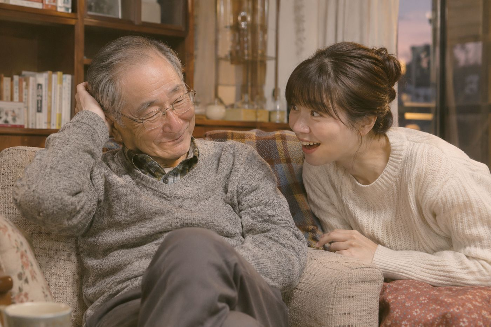
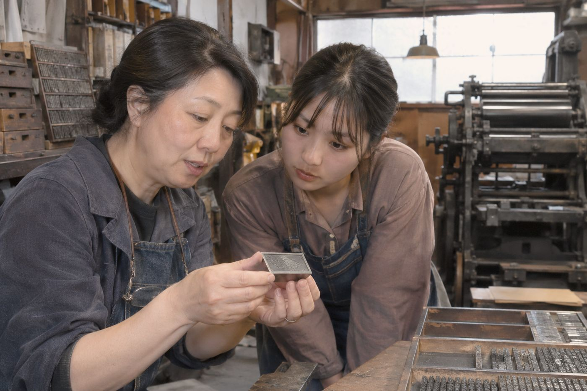
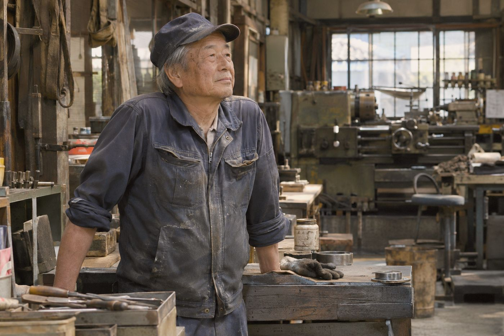
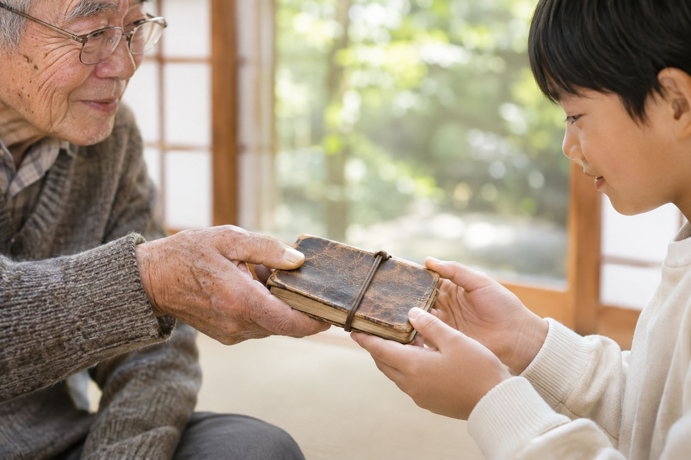
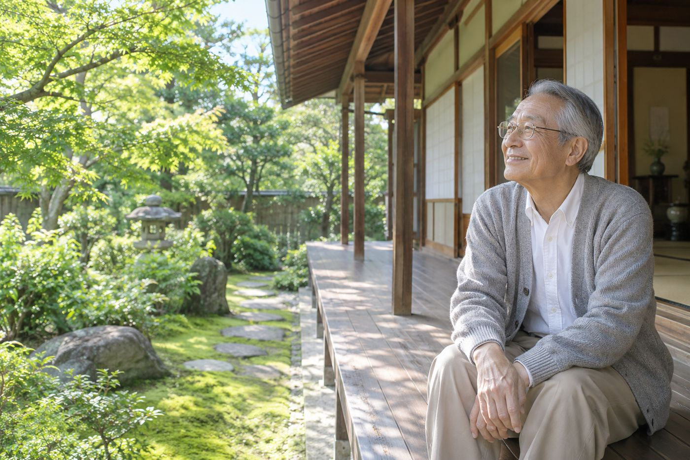
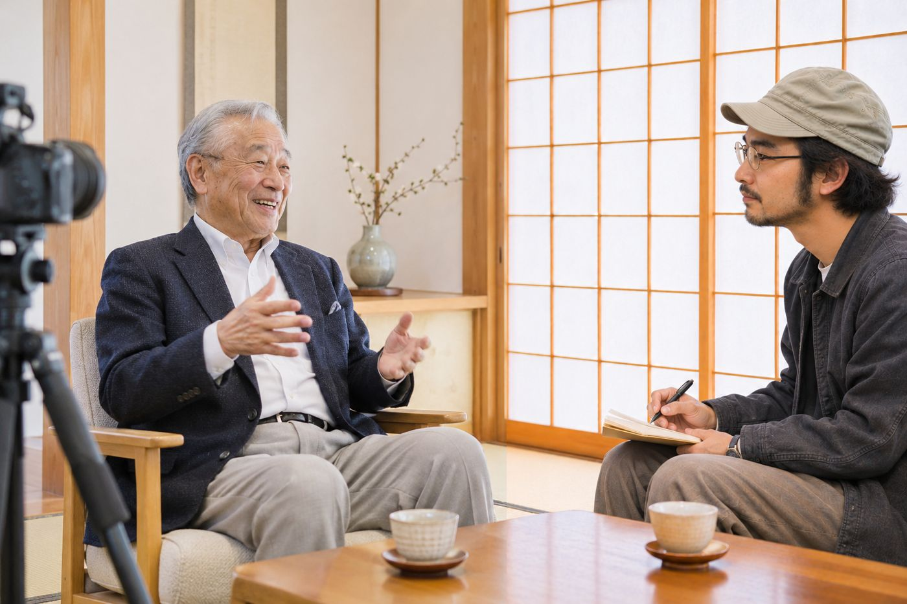

ひとこま ライト
150,000円（税込）
一度のインタビューで、人生の歩みと家族への思いを一本にまとめます。
- 完成尺
- 約15分
- インタビュー
- 1回（約2時間）
- 証言取材
- なし
- お写真の取り込み
- 30枚まで
- 試写・修正
- 1回
- 納品
- 映像データ＋DVD 2枚
- 制作期間
- 約1か月
築き上げてきたもの。守り抜いてきたもの。そして、まだ果たせていない夢まで。あなたが歩んできた人生を、あなた自身の言葉で一本のヒストリー映像に残します。
SCROLL正しかったことも、間違いだったことも。
そのすべてが、あなたの生き様です。
歩んできた道を振り返るとき、胸を張れる日もあれば、悔やみきれない日もあるはずです。すべて正しかったと思う方もいれば、すべて間違いだったと思う方もいるでしょう。
けれど、迷いながら下した決断も、遠回りした日々も、叶わなかった夢も、その一つひとつが、いまのあなたと、あなたが守ってきた人たちをつくってきました。正しかったのか、間違いだったのか。その答えは、あなた自身の言葉の中にあります。
だから私たちは、成し遂げたことも、成し遂げられなかったことも、すべてを語っていただき、映像に残します。その言葉は、次の世代にとって、何よりの道しるべになるはずです。
あなたの思いを、
映像にする。
考えているのは、
それだけです。
会社を興し、人を雇い、何十年と事業を背負ってきた方の人生には、決算書にも社史にも載らない思いがあります。なぜあの決断をしたのか。誰のために踏ん張ってきたのか。本当は、何を成し遂げたかったのか。
私たちは、その思いを伺い、映像に残します。台本はありません。用意した言葉を読んでいただくのではなく、あなたが語る言葉そのものを、表情や声の震えとともに記録します。
情報も映像も一瞬でつくれる時代になりました。それでも、人の心を動かすのは、人が人に向き合って語った言葉です。だから私たちは、お会いして、時間をかけてお話を伺うことから始めます。



ひとりの経営者が抱いてきた思いを、家族、社員、そして次の世代へ。言葉と表情のまま、確かに受け継がれるかたちにします。
成し遂げたことも、成し遂げられなかったことも。人生の一場面ずつに光を当て、その方の生き様が伝わるヒストリーに仕上げます。
功績を讃える記念品ではなく、思いを受け継ぐための記録として。生き様を映像で残す文化を、日本の経営者から広げていきます。
経営者の方とお話しすると、必ずと言っていいほど「本当はもっとやりたかったことがある」という言葉が出てきます。立ち上げたかった事業、果たせなかった約束、志半ばで手放した挑戦。
多くの記録は、成功と功績だけを残します。けれど、その方の生き様がもっとも表れるのは、叶わなかった夢を語るときの表情です。私たちは、成し遂げられなかったことも含めて、あなたの人生のヒストリーとして残します。その思いは、映像を通して、次にそれを叶える誰かへ託されていきます。

時代や資金、体力の事情で実現できなかった構想。その着想と、いまも消えない熱を語っていただきます。
恩人に、家族に、社員に。言えずにきた感謝や、果たせなかった約束を、ご自身の言葉で残します。
後継者、お子さま、お孫さま、会社の若い社員へ。叶えてほしい夢と、大切にしてほしい考えを手渡します。

お一人おひとりの人生に合わせて構成しますが、多くの作品は次の流れで、生まれた日から未来へ託す思いまでをたどります。


あらかじめ書いた言葉を読んでいただくことはありません。私たちが用意するのは問いだけです。語られる言葉はすべて、あなた自身のものです。
一度の撮影で終わらせず、数回にわたってお会いし、信頼関係を築きながらお話を伺います。本音は、向き合う時間の中でしか生まれません。
事業責任者でチーフディレクターの滝田は、テレビ番組の制作現場で、数多くの方に取材してきました。話を引き出す力と、人生を一本の流れとして伝える構成力を、あなたのために使います。
ご本人・ご家族のためのプランと、経営者・企業のためのプランをご用意しています。表示はすべて税込です。
ご自身の歩みを家族に残したい方、親御さんの人生を映像にしたいご家族へ。
150,000円（税込）
一度のインタビューで、人生の歩みと家族への思いを一本にまとめます。
280,000円（税込）
二度お会いしてじっくり伺い、ご家族の言葉も重ねて、人生を章立てで描きます。
200,000円（税込）
故人を知る方々のお話と、残されたお写真・映像から、その方の人生と思いをたどります。
経営者・元経営者ご本人の人生と、創業から受け継がれてきた志を残したい方へ。
600,000円（税込）
三度のインタビューと関係者の証言、ゆかりの場所での撮影で、経営者としての歩みと胸の内を描きます。
1,000,000円（税込）
生まれ故郷、創業の地、転機となった場所。ご本人とともに人生の舞台を訪ね歩き、その場で語られる言葉を残します。
遠方への交通費・宿泊費は実費を頂戴します。
800,000円（税込）
創業者の志と会社の歩みを、社員や取引先の言葉とともに記録します。周年行事や事業承継、理念の継承に。
ご契約時に半額、納品時に残りの半額を、銀行振込でお支払いいただきます。
全国に伺います。東京23区内は出張費無料、それ以外の地域は交通費・宿泊費の実費を頂戴します。
撮影前のキャンセルは、ご入金額から事務手数料10,000円を引いて返金します。撮影後は、着手金の返金はいたしかねます。
伺ったお話、経営上の情報、ご家族に関することは、ご本人の許可なく外部に出すことはありません。必要に応じて秘密保持契約を結びます。
ご家族だけで見る、社内で共有する、式で上映する。誰に見せるかは、すべてご本人とご家族のご判断に従います。
お話しいただく内容はご本人が選べます。撮影後でも、使ってほしくない場面は必ず外します。
何十年先にもご覧いただけるよう、複数の形式で納品し、ご希望に応じて原本データをお預かりします。
きっかけは、祖母の葬儀でした。祖母の人生をたどる映像をつくり、式で流したところ、会場にいた家族や祖母の友人たちから、後になって何度も感謝の言葉をいただきました。写真を並べるだけでは伝わらなかった祖母の思いが、映像と言葉を通じて、確かにみんなに届いたのだと思います。
同時に、悔いも残りました。祖母が本当は何を考え、何をやり残したと感じていたのか。それを本人の口から聞いておけばよかった、と。
私はテレビ番組の制作の仕事を通じて、多くの方に話を伺ってきました。とりわけ事業を築いてこられた方々は、成し遂げたことの何倍もの「やりたかったこと」を胸に抱えています。その思いは、語られなければ、誰にも知られないまま消えてしまいます。
私たちは、あなたの思いを映像にすることだけを考えています。成し遂げたことも、成し遂げられなかったことも、すべてがあなたの人生です。その思いを、受け継ぐべき人たちへ確かに手渡すお手伝いをさせてください。
ひとこま 事業責任者 / チーフディレクター 滝田 務
台本はありませんので、うまく話す必要はありません。私たちが問いかけ、あなたが思い出すままにお話しいただく形です。数回お会いするうちに、自然に言葉が出てくる方がほとんどです。
お話しいただいた内容は、ご本人の了承なく外部に出すことはありません。映像に入れるかどうかも、試写の段階でご本人に決めていただきます。
一回のインタビューは1〜2時間ほどです。ご自宅や入院先など、ご負担の少ない場所に伺います。日程もご体調に合わせて調整します。
インタビューと、ゆかりの場所での撮影を中心に構成できます。ご家族や旧知の方への取材で、新たに資料が見つかることも少なくありません。
はい。ご家族やご子息、会社の皆さまからのご依頼も承ります。ご本人へのお声がけの仕方から、一緒にご相談させてください。
東京23区外への出張の場合のみ、交通費・宿泊費の実費を頂戴します。それ以外は、お選びいただいたプランとオプションの金額がすべてです。お見積りは事前にお出しします。
はい。お話を伺ううちに「もっと残したい」と思われることはよくあります。インタビューや証言取材の追加、上位プランへの切り替えは、いつでもご相談ください。
日程はいつでも延期できます。万一撮影を続けられなくなった場合も、それまでに伺ったお話とお写真で一本の映像に仕上げ、ご家族にお届けします。
| 事業名 | ひとこま（仮称） |
|---|---|
| 事業責任者 | 滝田 務（チーフディレクター） |
| 事業内容 | ライフヒストリー映像、経営者ヒストリー映像、創業者・企業ヒストリー映像、追悼ヒストリー映像の企画・取材・撮影・編集 |
| 事業開始 | 2027年4月（予定） |
| 運営会社 | 福祉ITパートナー（仮） |
| 代表者 | 上原 健太 |
| 所在地 | 〒000-0000 東京都○○区○○ 0-0-0（仮） |
| 電話番号 | 03-0000-0000（仮） |
| メール | info@hitokoma.example（仮） |
| 対応エリア | 全国（東京23区外は交通費・宿泊費を実費で頂戴します） |
ご相談は無料です。映像にするかどうかを決めていただくのは、お話を伺ったあとで構いません。ご本人からでも、ご家族や会社の方からでも承ります。